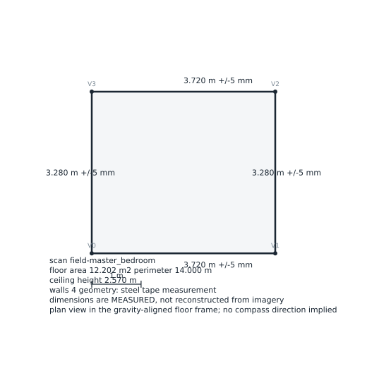
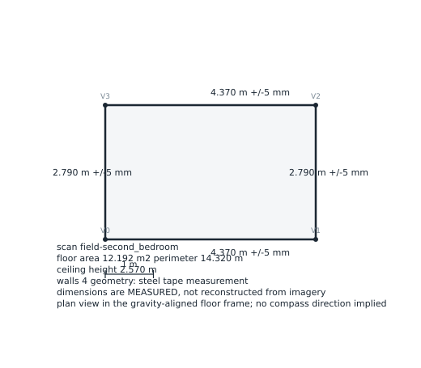
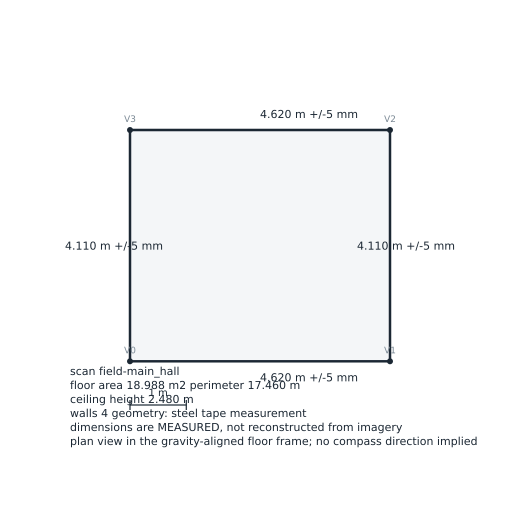

Geometry source: steel tape measurement. These dimensions were measured,
not reconstructed from imagery. Monocular depth was run over all 238 photographs
and is reported separately; on this capture it is not metric-grade because no
frame contains a scale reference. Wall photographs are attached as evidence for
each surface and were not used to derive any dimension.
master bedroom
3.720 x 3.280 m
· height 2.57 m
· area 12.20 m²
dimensional 100%
· photographic corroboration 60%
· 18 wall photographs attached

wall evidence (12 shown)
- m_wall_1.1.jpg wall 1
- m_wall_1.2.jpg wall 1
- m_wall_1.3.jpg wall 1
- m_wall_2.1.jpg wall 2
- m_wall_2.2.jpg wall 2
- m_wall_2.3.jpg wall 2
- m_wall_3.1.jpg wall 3
- m_wall_3.2.jpg wall 3
- m_wall_3.3.jpg wall 3
- m_wall_4.1.jpg wall 4
- m_wall_4.2.jpg wall 4
- m_wall_4.3.jpg wall 4
JSON ·
SVG
second bedroom
4.370 x 2.790 m
· height 2.57 m
· area 12.19 m²
dimensional 50%
· photographic corroboration 60%
· 17 wall photographs attached

wall evidence (12 shown)
- 2_room_wall_1 (1).jpg wall 1
- 2_room_wall_1 (2).jpg wall 1
- 2_room_wall_1 (3).jpg wall 1
- 2_room_wall_2 (1).jpg wall 2
- 2_room_wall_2 (2).jpg wall 2
- 2_room_wall_2 (3).jpg wall 2
- 2_room_wall_3 (1).jpg wall 3
- 2_room_wall_3 (2).jpg wall 3
- 2_room_wall_3 (3).jpg wall 3
- 2_room_wall_4 (1).jpg wall 4
- 2_room_wall_4 (2).jpg wall 4
- 2_room_wall_4 (3).jpg wall 4
JSON ·
SVG
main hall
4.620 x 4.110 m
· height 2.48 m
· area 18.99 m²
dimensional 50%
· photographic corroboration 60%
· 19 wall photographs attached

wall evidence (11 shown)
- hall_side_1 (1).jpg wall 1
- hall_side_1 (2).jpg wall 1
- hall_side_1 (3).jpg wall 1
- hall_side_2 (1).jpg wall 2
- hall_side_2 (2).jpg wall 2
- hall_side_2 (3).jpg wall 2
- hall_side_3 (1).jpg wall 3
- hall_side_3 (2).jpg wall 3
- hall_side_3 (3).jpg wall 3
- hall_side_4 (1).jpg wall 4
- hall_side_4 (2).jpg wall 4
JSON ·
SVG